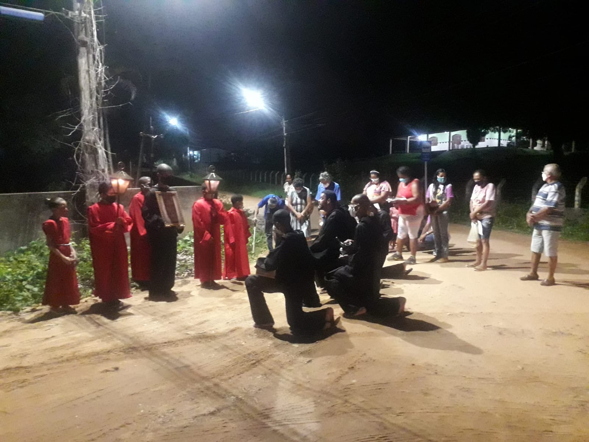

Ações Evangelizadoras
Necessitamos de uma NOVA EVANGELIZAÇÃO!!!

Este foi o grande clamor e a descoberta da Santa Madre
Igreja por meio de seus Pastores em meados do século XX.
Pois no mundo crescia o avanço tecnológico, a modernidade, a
mídia, os meios de comunicação e o homem cada vez mais ia se
esquecendo de Deus, a criatura querendo caminhar
independente de seu Criador.
Em resposta a esta necessidade de evangelizar o homem
moderno e e trazê-lo de volta para Deus, o Espírito Santo
que é a alma da Igreja, veio de forma poderosa socorrê-la
suscitando em todo mundo os Novos Carismas, como classificou
São João Paulo II, a Primavera da Igreja, para resgatar o
valor e as riquezas da nossa Fé, por meio da vivência
radical do Evangelho anunciando a todo mundo a Boa
Notícia, Jesus Cristo Vivo e Ressuscitado.
O Espírito Santo que suscitou este novo Carisma dos Filhos e
Filhas de São Bento no coração do nosso amado Pai Fundador
também têm lhe inspirado algumas ações para que a nossa
Fraternidade possa contribuir com a Nova Evangelização.
Fotos
Conforme documento 100 de Aparecida, a comunidade de
comunidades é lugar da escuta da Palavra de Deus, é a
formação de seus membros para evangelizar, pois, é dinâmica.
Ela é nova no espírito, no ardor e dinâmica no anúncio da
Palavra.
Segundo nosso querido Papa Francisco: este
exercício pastoral mostra o rosto de Mãe da Igreja, que
gera, amamenta, faz crescer, corrige, alimenta e conduz pela
mão seus filhos, impulsionando-os a evangelizar e
testemunhar a alegria do Evangelho.
Nosso Fundador afirma
que é "o encontro do Cristo Ressuscitado com o Cristo
Crucificado que está nos irmãos necessitados, que são pobres
dos bens espirituais e dos bens materiais.
(Clique ou toque na imagem para ver outras)
Ações Evangelizadoras!